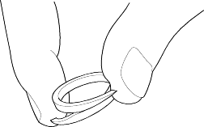
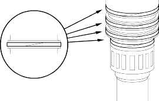

- If the clearance is out of standard, remove the 36.5 x 55 mm thrust washer and measure its thickness.
- Select and install a new thrust washer, then recheck.
THRUST WASHER, 36.5 x 55 mm
No. Part Number Thickness 1 90441-P4P-000 4.00 mm (0.157 in.) 2 90442-P4P-000 4.05 mm (0.159 in.) 3 90443-P4P-000 4.10 mm (0.161 in.) 4 90444-P4P-000 4.15 mm (0.163 in.) 5 90445-P4P-000 4.20 mm (0.165 in.) 6 90446-P4P-000 4.25 mm (0.167 in.) 7 90447-P4P-000 4.30 mm (0.169 in.) 8 90448-P4P-000 4.35 mm (0.171 in.) 9 90449-P4P-000 4.40 mm (0.173 in.) 10 90450-P4P-000 4.45 mm (0.175 in.) - After replacing the thrust washer, make sure the clearance is within standard.
- Disassemble the shaft and gears.
- Reinstall the bearing in the transmission housing (see page 14-177).
- For a better fit, squeeze the sealing rings together slightly before installing them.

- Apply ATF to the new sealing rings, then install them on the mainshaft.

- After installing the sealing rings, verify the following:
- The rings are fully seated in the groove.
- The ring are not twisted.
- The chamfered ends of the ring are properly joined.